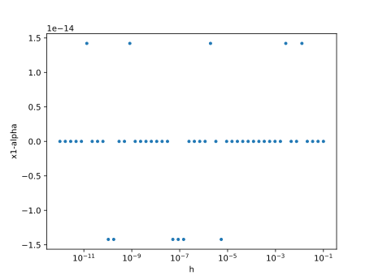
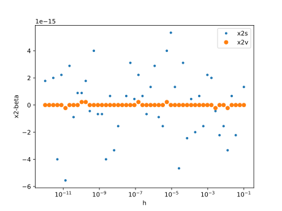
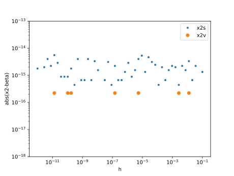
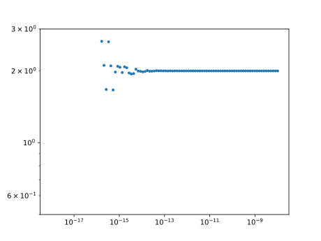
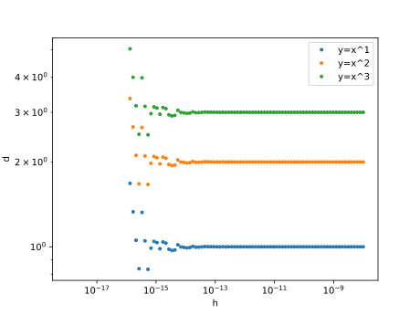

<!DOCTYPE html>
<html lang="en"><head><meta charset="UTF-8"/><meta name="viewport" content="width=device-width, initial-scale=1.0"/><title>第7回：■ 浮動小数点数 · Memorandom on Julia Language v0.6.4</title><link href="https://cdnjs.cloudflare.com/ajax/libs/normalize/4.2.0/normalize.min.css" rel="stylesheet" type="text/css"/><link href="https://fonts.googleapis.com/css?family=Lato|Roboto+Mono" rel="stylesheet" type="text/css"/><link href="https://cdnjs.cloudflare.com/ajax/libs/font-awesome/4.6.3/css/font-awesome.min.css" rel="stylesheet" type="text/css"/><link href="https://cdnjs.cloudflare.com/ajax/libs/highlight.js/9.12.0/styles/default.min.css" rel="stylesheet" type="text/css"/><script>documenterBaseURL="."</script><script src="https://cdnjs.cloudflare.com/ajax/libs/require.js/2.2.0/require.min.js" data-main="assets/documenter.js"></script><script src="siteinfo.js"></script><script src="../versions.js"></script><link href="assets/documenter.css" rel="stylesheet" type="text/css"/></head><body><nav class="toc"><h1>Memorandom on Julia Language v0.6.4</h1><select id="version-selector" onChange="window.location.href=this.value" style="visibility: hidden"></select><form class="search" id="search-form" action="search.html"><input id="search-query" name="q" type="text" placeholder="Search docs"/></form><ul><li><a class="toctext" href="ch00.html">はじめに</a></li><li><a class="toctext" href="ch01.html">第1回：▶︎ 簡単なグラフを描く</a></li><li><a class="toctext" href="ch02.html">第2回：▶︎ 複数のグラフを描く</a></li><li><a class="toctext" href="ch03.html">第3回：▶︎ 連続な曲線を描く</a></li><li><a class="toctext" href="ch04.html">第4回：▶︎ 不連続な曲線を描く</a></li><li><a class="toctext" href="ch05.html">第5回：■ 条件式・■ 条件分岐</a></li><li><a class="toctext" href="ch06.html">第6回：■ 型・■ 整数型</a></li><li class="current"><a class="toctext" href="ch07.html">第7回：■ 浮動小数点数</a><ul class="internal"><li><a class="toctext" href="#浮動小数点数-1">■ 浮動小数点数</a></li><li><a class="toctext" href="#小数を2進数へ変換する-1">▶︎ 小数を2進数へ変換する</a></li><li><a class="toctext" href="#有限小数・循環小数-1">◀︎ 有限小数・循環小数</a></li><li><a class="toctext" href="#加減算における桁落ちと情報落ち-1">■ 加減算における桁落ちと情報落ち</a></li><li><a class="toctext" href="#2次方程式-1">▶︎ 2次方程式</a></li><li><a class="toctext" href="#近似比較演算子-isapprox-1">近似比較演算子 isapprox</a></li><li><a class="toctext" href="#数でない数-1">数でない数</a></li><li><a class="toctext" href="#数値微分-1">▶︎ 数値微分</a></li><li><a class="toctext" href="#今回のまとめ-1">★今回のまとめ</a></li></ul></li><li><a class="toctext" href="ch08.html">第8回： ■ 配列要素の操作</a></li><li><a class="toctext" href="ch09.html">第9回： ▶︎ 総和・数値積分</a></li><li><a class="toctext" href="ch10.html">第10回：線形代数</a></li><li><a class="toctext" href="ch11.html">第11回：複素数</a></li><li><a class="toctext" href="ch12.html">第12回：ファイル入出力</a></li><li><a class="toctext" href="ch13.html">第13回：検討中</a></li><li><a class="toctext" href="ch14.html">第14回：検討中</a></li><li><a class="toctext" href="ch15.html">第15回：落ち葉拾い</a></li><li><a class="toctext" href="index.html">toc</a></li></ul></nav><article id="docs"><header><nav><ul><li><a href="ch07.html">第7回：■ 浮動小数点数</a></li></ul></nav><hr/><div id="topbar"><span>第7回：■ 浮動小数点数</span><a class="fa fa-bars" href="#"></a></div></header><h1><a class="nav-anchor" id="ch07-1" href="#ch07-1">第7回：■ 浮動小数点数</a></h1><h2><a class="nav-anchor" id="浮動小数点数-1" href="#浮動小数点数-1">■ 浮動小数点数</a></h2><h3><a class="nav-anchor" id="正規化数、副正規化数-1" href="#正規化数、副正規化数-1">正規化数、副正規化数</a></h3><p>浮動小数とは、<span>$0.12$</span> の代わりに <span>$1.2 \times 10^{-1}$</span> のように表示することである。</p><p>10進数の浮動小数は</p><div>\[\pm{\left(d_0.d_1d_2\cdots \right)}_{10}\times 10^{e}\]</div><p>のように表される。<span>$\times$</span>の前までの<span>${\left(d_0.d_1d_2\cdots \right)}_{10}$</span> の部分は仮数部と呼ばれる。添字の<span>$10$</span>は10進数を意味し、<span>$d_0, d_{1}, \cdots $ は $0,1,\ldots,9$</span> までの数字である。<span>$\times$</span> の後ろの <span>$10^{e}$</span> は指数部と呼ばれる。</p><p>2進数の浮動小数は</p><div>\[\pm{\left(b_0.b_1b_2\cdots \right)}_{2}\times 2^{e}\]</div><p>のように表される。 ここで、<span>$\times$</span>の前までの <span>${\left(b_0.b_1b_2\cdots \right)}_{2}$</span> の部分は仮数部と呼ばれる。添字の<span>$2$</span>は2進数を意味し、<span>$b_0, b_{1}, \cdots $ は $0$</span> または <span>$1$</span> の数字である。<span>$\times$</span> の後ろの <span>$2^{e}$</span> は指数部と呼ばれる。</p><p>bit (binary digit)とは、2進数の一桁のことである。</p><p>本文で用いる浮動小数点数は Float64 型である。</p><pre><code class="language-julia-repl">julia&gt; typeof(1.0)
Float64</code></pre><p>Float64 型は、「IEEE754標準倍精度浮動小数点数」に基づき、 符号部 1 bit、 指数部 11 bit 仮数部 53 bit から構成される。 ただし、以下のように先頭の 1 bitを固定し、仮数部の 52 bit のみをデータとして採用するため、 2進数の並びは 1+11+52 = 64 bit である。</p><p>Float64は、正規化数、副正規化数、数でない数の３種類からなりたっている。</p><p>正規化数は、<span>$b_{0} = 1$</span>として、 <span>$\pm{\left(1.b_1b_2\cdots b_{52}\right)}_{2}\times 2^{e}$</span> のように表すものである。 ただし、指数は <span>$−1022 \le e \le 1023$</span> の範囲である。 仮数 <span>${\left(1.b_1b_2\cdots b_{52}\right)}_2$</span> は 1以上で2を超えない範囲の小数となる。</p><p>正規化数で表すことができない、絶対値が小さい浮動小数は副正規化数で表わされる。</p><p>副正規化数は、<span>$b_{0} = 0$</span>, <span>$e=−1023$</span> として、 <span>$\pm{\left(0.b_1b_2\cdots b_{52}\right)}_{2}\times 2^{e}$</span> のように表すものである。 仮数部 <span>${\left(1.b_1b_2\cdots b_{52}\right)}_{2}$</span> は 0以上で1を超えない範囲の小数となる。</p><p>「数でない数」はあとに述べる。</p><p>Float64で表すことができる、絶対値が最も大きい数は、 正規化数の <span>$2^{1024}≃1.798\times10^{308}$</span> である。 絶対値が最も小さい数は副正規化数の <span>$2^{−1022}≃2.225\times10^{−308}$</span> である。</p><p>これらは、<code>realmax</code>, <code>realmin</code>関数で得られる。</p><pre><code class="language-julia-repl">julia&gt; realmax(Float64)
1.7976931348623157e308

julia&gt; realmin(Float64)
2.2250738585072014e-308</code></pre><h3><a class="nav-anchor" id="丸め-1" href="#丸め-1">丸め</a></h3><p>小数 <span>$0.2$</span> は <span>$0.2 = \frac{1}{5} = \frac{1}{{101}_{2}}$</span> となるが、<span>$1$</span> を <span>${101}_{2}$</span> で割り切ることはできない。<span>$0.2$</span> を2進数で表すと</p><div>\[{0.00110011001100\cdots}_{2}\]</div><p>のようになる。すなわち、<span>$1100$</span> の並びが無限に続く循環小数となる。</p><p>また、小数 <span>$0.1$</span> は <span>$0.1 = \frac{1}{5\times 2} = \frac{1}{{101}_{2}} \times 2^{-1}$</span> であるから、$0.1$ を2進数で表すと（上を1桁ずらして）</p><div>\[{0.000110011001100\cdots}_{2}\]</div><p>のようになる。これも、<span>$1100$</span> の並びが無限に続く循環小数となる。</p><p> 「有限桁の小数」で表すことができない「循環小数」を、 Float64型で表現するとき、 その仮数の末尾に近いの桁を修正する操作を行う場合がある。 この操作を「丸める」という。</p><p>「丸め」られた浮動小数の計算は、筆算とは違う結果となる場合がある。 例えば、</p><pre><code class="language-julia-repl">julia&gt; 0.1+0.2
0.30000000000000004

julia&gt; 0.1+0.2 == 0.3
false</code></pre><p>筆算の結果は <span>$0.3$</span>であるが、 計算結果は <code>0.30000000000000004</code> と異なってしまう。</p><p>別の例として、<span>$0.1$</span>を 10回足した結果は</p><pre><code class="language-julia-repl">julia&gt; s=0
0

julia&gt; for i in 1:10
         s+= 0.1
       end

julia&gt; @show s
s = 0.9999999999999999
0.9999999999999999

julia&gt; s == 1.0
false</code></pre><p>0.9999999999999999 となり、<span>$1.0$</span> にはならない。</p><p>このような、「丸め」を原因とする、 正しい値からの「ずれ」を「丸め誤差」と呼んでいる。</p><h2><a class="nav-anchor" id="小数を2進数へ変換する-1" href="#小数を2進数へ変換する-1">▶︎ 小数を2進数へ変換する</a></h2><div>\[x=f_{1}2^{-1} + f_{2}2^{-2} + \cdots\]</div><p>(正の)小数を2進数に変換するには、 小数を2倍しその整数部分を取り出すことを、繰り返し行えばよい。</p><p>小数 0.2を、2進数で表示すると循環小数になる。 1100 のパターンが繰り返し現れる。</p><pre><code class="language-julia-repl">julia&gt; x=0.2
0.2

julia&gt; for i=1:50
         x *= 2
         q=floor(x)
         print(Int64(q))
         x -= q*2
       end
001-12-49-1734-68137-273546-10922185-43698738-1747634953-69905139810-279620559241-11184812236962-44739248947849-1789569735791394-71582788143165577-286331153572662306-11453246122290649225-45812984499162596898-1832519379636650387593-73300775185146601550370-293203100740586406201481-11728124029612345624805922-46912496118449382499223689-1876499844737737529996894754-75059993789508</code></pre><h2><a class="nav-anchor" id="有限小数・循環小数-1" href="#有限小数・循環小数-1">◀︎ 有限小数・循環小数</a></h2><p>0.5以下の正の小数をいくつかを選び、 これらを2進数に直してみよ。有限小数か循環小数かを判定せよ。</p><p>例: 0.1, 0.2, 0.25, 0.3, 0.5</p><p>さらに、5つ程度の例を加えよ。</p><h2><a class="nav-anchor" id="加減算における桁落ちと情報落ち-1" href="#加減算における桁落ちと情報落ち-1">■ 加減算における桁落ちと情報落ち</a></h2><p>桁落ち、情報落ち</p><p>加算</p><p>結合則を満たさない</p><pre><code class="language-julia-repl">julia&gt; x= 1e20
1.0e20

julia&gt; y=-1e20
-1.0e20

julia&gt; z= 1.0
1.0

julia&gt; (x + y) + z
1.0

julia&gt; x + (y + z)
0.0</code></pre><p>0.0 丸め誤差</p><h2><a class="nav-anchor" id="2次方程式-1" href="#2次方程式-1">▶︎ 2次方程式</a></h2><p>2次方程式 <span>$x^2-bx+c=0$</span> の解は、解の公式から、判別式 <span>$d=b^2-4c$</span>を用いて、 <span>$\begin{align}x_1&amp;=\frac{b+\sqrt{d}}{2}=\frac{b+\sqrt{b^2-4c}}{2}\\
x_2&amp;=\frac{b-\sqrt{d}}{2}=\frac{b-\sqrt{b^2-4c}}{2}\end{align}$</span> であるが、<span>$b$</span> と <span>$\sqrt{d}$</span>が同程度のとき <span>$x_2$</span> は桁落ちしやすい。 そこで、<span>$(b-\sqrt{b^2-4c})$</span> を分母分子に掛けて</p><div>\[x_{21} = \frac{2c}{b+\sqrt{b^2-4c}}=\frac{c}{x_1}\]</div><p>により計算する。最後の項は、解と係数の関係 <span>$x_1x_2=c$</span> である。</p><h3><a class="nav-anchor" id="2次方程式：計算の例-1" href="#2次方程式：計算の例-1">▶︎ 2次方程式：計算の例</a></h3><p>実例で見てみよう。</p><p>小さい正の数 <code>h</code>を用いて、<span>$\alpha = 100+h$</span> と <span>$\beta = 1+h$</span> を解とする2次方程式を作る。解と係数の関係から、上の方程式において <span>$b = \alpha + \beta$</span>, <span>$c=\alpha\beta$</span> と定めればよい。</p><div><pre><code class="language-julia">h=logspace(-12,-1);
alpha=100+h
beta=1+h;
c=alpha .* beta;
b=-alpha -beta;</code></pre></div><p>解の公式から、「大きい方の解」 <code>x1</code>を計算する。 <code>x2s</code>は解の公式から求めた「小さい方の解」、である <code>x2v</code>は解と係数の関係から求めた「小さい方の解」</p><div><pre><code class="language-julia">d=b.*b-4c;
x1=(-b+sqrt.(d))/2;
x2s=(-b-sqrt.(d))/2;
x2v=c./x1;</code></pre></div><p>「大きい方の解」について、正しい解との差をプロットしてみる。</p><div><pre><code class="language-julia">using PyPlot
plot(h, x1-alpha, &quot;.&quot;)
xlabel(&quot;h&quot;)
ylabel(&quot;x1-alpha&quot;)
xscale(&quot;log&quot;)</code></pre></div><p></p><p>「小さい方の解」について、正しい解との差をプロットしてみる。</p><div><pre><code class="language-julia">plot(h, x2s-beta,&quot;.&quot;,label=&quot;x2s&quot;)
plot(h, x2v-beta, &quot;o&quot;,label=&quot;x2v&quot;)
xlabel(&quot;h&quot;)
ylabel(&quot;x2-beta&quot;)
xscale(&quot;log&quot;)
legend()</code></pre></div><p></p><p>「小さい方の解」について、正しい解との差の絶対値(残差)をプロットしてみる。</p><div><pre><code class="language-julia">plot(h, abs.(x2s-beta),&quot;.&quot;,label=&quot;x2s&quot;)
plot(h, abs.(x2v-beta), &quot;o&quot;,label=&quot;x2v&quot;)
xlabel(&quot;h&quot;)
ylabel(&quot;abs(x2-beta)&quot;)
xscale(&quot;log&quot;)
ylim(1e-18,1e-13)
yscale(&quot;log&quot;)
legend()</code></pre></div><p></p><p>解の公式から求めた「小さい方の解」の残差が「あばれる」のに対して、 解と係数の関係から求めた小さい方の解」の残差が「一定」である様子が見れる。</p><h2><a class="nav-anchor" id="近似比較演算子-isapprox-1" href="#近似比較演算子-isapprox-1">近似比較演算子 isapprox</a></h2><h2><a class="nav-anchor" id="数でない数-1" href="#数でない数-1">数でない数</a></h2><p><a href="https://docs.julialang.org/en/v0.6.4/manual/mathematical-operations/#Numeric-Comparisons-1">Numeric Comparisons</a></p><p>数でない数か、確かめる。 <a href="https://docs.julialang.org/en/v0.6.4/stdlib/numbers/#Base.isfinite"><code>Base.isfinite</code></a></p><p><a href="https://docs.julialang.org/en/v0.6.4/stdlib/numbers/#Base.isinf"><code>Base.isinf</code></a></p><p><a href="https://docs.julialang.org/en/v0.6.4/stdlib/numbers/#Base.isnan"><code>Base.isnan</code></a></p><h2><a class="nav-anchor" id="数値微分-1" href="#数値微分-1">▶︎ 数値微分</a></h2><pre><code class="language-julia-repl">julia&gt; logspace(1,2,5)
5-element Array{Float64,1}:
  10.0
  17.7828
  31.6228
  56.2341
 100.0</code></pre><div>\[\frac{df(x_0)}{dx} = \lim_{h \longrightarrow 0}\frac{f(x_0+h)-f(x_0)}{h}\]</div><p>関数 <span>$y=x$</span> の <span>$x=1$</span>における微分係数を、 上の定義により求めよう。 求まるべき値は <span>$1$</span> であるが、<span>$h$</span> を小さくすると <span>$1$</span> の上下に暴れてしまう。</p><div><pre><code class="language-julia">using PyPlot
h=logspace(-18,-8,100)
d=( (1+h).^2 - 1) ./ h
plot(h,d, &quot;.&quot;)
ylim(5e-1,3e0)
yscale(&quot;log&quot;)
xscale(&quot;log&quot;)</code></pre></div><p></p><p>関数 <span>$y=x^n$</span>, (<span>$n=1,2,3$</span>) の <span>$x=1$</span>における微分係数を、 上の定義により求めよう。 求まるべき値は <span>$n$</span> であるが、<span>$h$</span> を小さくすると <span>$n$</span> の上下に暴れてしまう。</p><div><pre><code class="language-julia">using PyPlot
h=logspace(-18,-8,100)
for n=1:3
    d=( (1+h).^n - 1) ./ h
    plot(h,d, &quot;.&quot;, label=&quot;y=x^&quot;*string(n))
end
xlabel(&quot;h&quot;)
ylabel(&quot;d&quot;)
yscale(&quot;log&quot;)
xscale(&quot;log&quot;)
legend()</code></pre></div><p></p><h2><a class="nav-anchor" id="今回のまとめ-1" href="#今回のまとめ-1">★今回のまとめ</a></h2><footer><hr/><a class="previous" href="ch06.html"><span class="direction">Previous</span><span class="title">第6回：■ 型・■ 整数型</span></a><a class="next" href="ch08.html"><span class="direction">Next</span><span class="title">第8回： ■ 配列要素の操作</span></a></footer></article></body></html>
